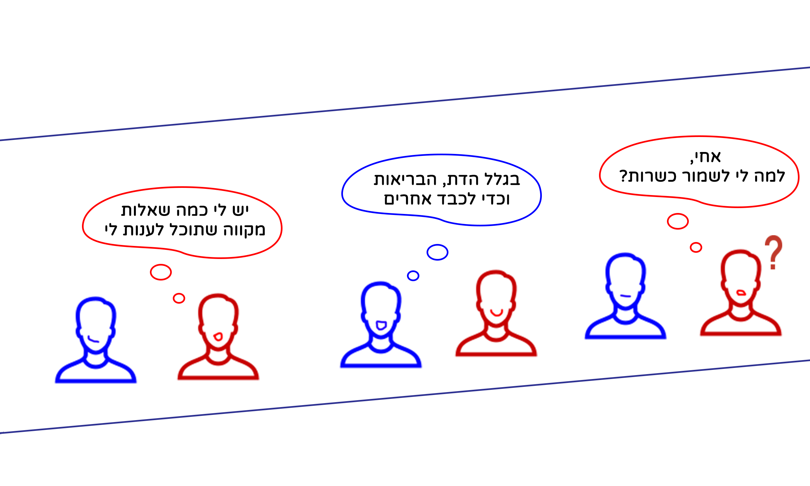

כשרות בפשטות
למה לאכול כשר?
בריאותי
החלב מחמיץ וכתוצאה מכך יהיה לך דלקות וזיהומים במערכת העיכול.
אכילת הדם גורמת לסכנת זיהום והרעלה, לכן על פי ההלכה, צריך לנקות, להמליח ולהשרות במים את הבשר.
מזון כשר נחשב למזון ללא מחלות כגון שרצים, ביצי חרקים, ועוד מזיקים שלא כדאי לנו להכניס לגוף.
דתי
אכן יש, השחיטה היהודית מונעת את המחלה הזו, וכאשר שוחטים לפי ההלכה אז החיידקים נשארים במוח שלה בלבד וככה אין סכנה.
כשאוכלים אוכל כשר, מתקרבים אל ה' ומכניסים לתוכנו קדושה, לעומת זאת, כאשר אוכלים לא כשר נכנס בתוכנו דבר שנוגד ומקשה את הקשר אל ה'.
כאשר אדם אוכל לא כשר הוא ניפגע מבעלי החיים הלא כשרים שאכל וכמו הטורפים הוא נהיה טורף אכזרי יותר.
בספר ויקרא מופיעים איסורים לגבי הנושא הכשרות, למשל: "לא תבשל גדי בחלב אמו".
שפה משותפת
מוכנים לשלם שכר גבוה למשגיחי הכשרות כדי שיעניקו חותמות כשרות למוצרים. בדרך זו מאמינים שאיכות המוצר תגדל ופיקוח המזון יהיה טוב ונקי יותר.
אנשים סבורים שהמאכלים הכשרים נקיים יותר, בריאים יותר ובעלי איכות גבוהה יותר.
לכל עם יש תרבות הכוללת בתוכה חגים, ערכים, נימוסים ,מנהגים ועוד. אדם הרוצה להרגיש חלק מעם צריך להכיר את התרבות ולהטמיע אותה.